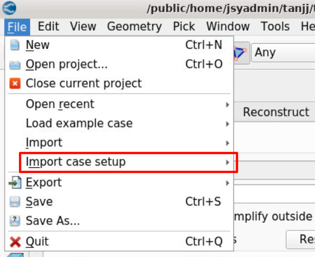

图形
启动脚本示例
#!/bin/bash
#SBATCH -p kshcnormal
#SBATCH -N 2
#SBATCH --ntasks-per-node=30
#SBATCH --exclusive
# module加载
module purge
module load compiler/intel/2021.3.0 mpi/intelmpi/2021.3.0
# 图形启动参数
export DISPLAY=vncserver01:17
export QT_OPENGL=software
export MESA_GL_VERSION_OVERRIDE=3.3
# 软件启动环境
export RLM_LICENSE=50531@10.15.200.4
SCRIPTDIR=/public/home/jsyadmin/apprepo/converge/4.1.2-none
export PATH=$PATH:$SCRIPTDIR/app/Convergent_Science/CONVERGE_CFD/4.1.2/CONVERGE_Studio/x64/bin
export PROGLIST=$SCRIPTDIR/app/Convergent_Science/CONVERGE_CFD/4.1.2/CONVERGE_Studio/x64/bin/CONVERGE_Studio
export LD_LIBRARY_PATH=$SCRIPTDIR/app/Convergent_Science/CONVERGE_CFD/4.1.2/CONVERGE/x64/lib64:$SCRIPTDIR/app/Convergent_Science/CONVERGE_CFD/4.1.2/CONVERGE/x64/lib64/INTEL:$LD_LIBRARY_PATH
# 图形启动
$PROGLIST -o
Tip
- 图形脚本里
module load compiler/intel/2020.1.217 mpi/intelmpi/2020.1.217走图形计算并不会识别相关环境参数要在/Path-to/Convergent_Science/CONVERGE_CFD/4.1.2/environment/x64/scripts/CONVERGE/CONVERGE-INTEL/4.1.2.sh配置 - 图形闪退的话启动参数加上
-o
图形计算设置
算例设置
导入算例文件
点击File --> Open project --> 选择*.cvg

Tip
*cvg是保存的图形配置文件
*.in *.dat是输入文件
*.echo、*.out、outputs_original等是输出文件
导入setup
点击File-->Import case setup-->算例所在目录

Tip
选中的目录文件所在位置，不是任何文件，软件会自动识别目录下的配置文件
并行设置
界面参数设置
以CONVERGE 4.1.2版本为例，其余版本可能会有些差异，但大同小异，点击Edit --> Preferences --> CONVERGE


CONVERGE root设置为/PATH-TO/Convergent_Science/CONVERGE_CFDMPI版本类型设置为INTEL MPI即可number of processes设置为申请资源的核数，hostfile不用设置，mpirun会自动识别License根据实际版本设置浮动许可或者本地授权文件
Tip
1.MPI type选中后未出现，点击ok后再打开一下
2.MPI type无法切换，可以删下配置文件rm -fr ~/.config/Convergent\ Science\ Inc./CONVERGE_Studio.conf，后重新打开软件
并行配置文件
以选中INTEL MPI为例，图形计算的环境激活文件为/PATH-TO/Convergent_Science/CONVERGE_CFD/4.1.2/environment/x64/scripts/CONVERGE/CONVERGE-INTEL/4.1.2.sh
export installroot=/public/home/jsyadmin/apprepo/converge/4.1.2-none/app/Convergent_Science
export env_scripts=$installroot/CONVERGE_CFD/4.1.2/environment/x64/scripts
source $env_scripts/CONVERGE/CONVERGE-INTEL/cvg/4.1.2.sh
source $env_scripts/CONVERGE/CONVERGE-INTEL/mpi/4.1.2.sh
source $env_scripts/CONVERGE/CONVERGE-INTEL/utilities/4.1.2.sh
source $env_scripts/CONVERGE/CONVERGE-INTEL/udf/4.1.2.sh
# When ParaView is installed
if [[ -d $installroot/ParaView/5.11.0 ]]; then
source $env_scripts/paraview/INTEL/5.11.0.sh
mpi、cvg、tilities、udf、paraview等配置文件
-
mpi/4.1.2.sh中将集群的加载的调试环境填入，原先的环境均可以注释，mpi的实际影响环境文件可以在此脚本中调试配置module purge module load compiler/intel/2021.3.0 mpi/intelmpi/2021.3.0 export I_MPI_SHM_HEAP_VSIZE=512 export UCX_TLS=all export UCX_MEM_EVENTS=n -
cvg/4.1.2.sh中注释掉原先的I_MPI_ROOT变量export installroot=/public/home/jsyadmin/apprepo/converge/4.1.2-none/app/Convergent_Science export cvgdir=$installroot/CONVERGE_CFD/4.1.2/CONVERGE #export I_MPI_ROOT=$cvgdir/x64/bin/mpi/INTEL export PATH=$cvgdir/x64/bin:$PATH export LD_LIBRARY_PATH=$cvgdir/x64/lib64:$LD_LIBRARY_PATH export LD_LIBRARY_PATH=$cvgdir/x64/lib64/INTEL:$LD_LIBRARY_PATH export LD_LIBRARY_PATH=.:$LD_LIBRARY_PATH export CONVERGE_ROOT=$installroot -
udf/4.1.2.sh、utilities/4.1.2.sh、paraview/INTEL/5.11.0.sh中可默认不改
Warning
所有配置文件注意修改$installroot变量，商城安装的还是原来的安装路径
求解计算
点击 Run CONVERGE

Tip
如果算例配置文件已经设置好，尽量不要overwrite

计算日志会在该界面打印出来，往前翻就可以看到前期加载的配置文件，设置的环境等，出现运行问题也可在此根据日志debug